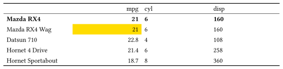
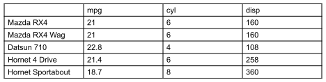
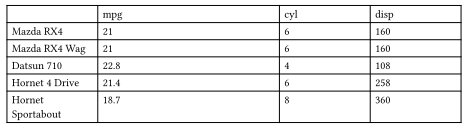
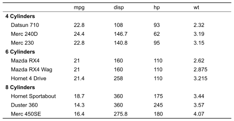

Introduction
The purpose of typstable is to produce publication-ready tables for Quarto documents targeting the Typst format. Typst is a modern, open-source, markup-based typesetting system that provides an alternative to LaTeX for rendering PDF documents. In this article I show how to use the typstable package.
Installation
# Install from GitHub
pak::pak("freierson/typstable")Table Styling
Use tt_style() to customize the table appearance:
tbl <- tt(mtcars[1:5, 1:3],
col_names = c("", "Miles/Gallon", "Cylinders", "Displacement")) |>
tt_style(
striped = TRUE,
header_separate = TRUE,
inset = "8pt"
)
tbl
Column, Row, and Cell Formatting
Format specific parts of the table with tt_column(),
tt_row(), and tt_cell():
tbl <- tt(mtcars[1:5, 1:3]) |>
tt_column(mpg, align = "right") |>
tt_row(1, bold = TRUE) |>
tt_cell(2, 2, background = "yellow")
tbl
Column Widths
Control column widths with tt_widths(). Values are
proportional:
tbl <- tt(mtcars[1:5, 1:3]) |>
tt_style(stroke = TRUE) |>
tt_widths(1, 2, 1, 1) # 20%, 40%, 20%, 20%
tbl
Spanning Headers
Add spanning headers with tt_header_above():
tbl <- tt(mtcars[1:6, c("mpg", "qsec", "cyl", "disp", "hp", "wt")]) |>
tt_style(header_separate = TRUE) |>
tt_header_above(c(" " = 1, "Performance" = 2, "Characteristics" = 4), gap='5pt') |>
tt_column(1, width = "25%")
tbl
Row Grouping
Group rows with tt_pack_rows():
tbl <- tt(mtcars[1:6, 1:5]) |>
tt_pack_rows("4 Cylinders", 1, 2) |>
tt_pack_rows("6 Cylinders", 3, 6) |>
tt_column(1, width="30%")
tbl
Saving Tables
If you have the Typst CLI installed, you can export tables to various
formats using tt_save().